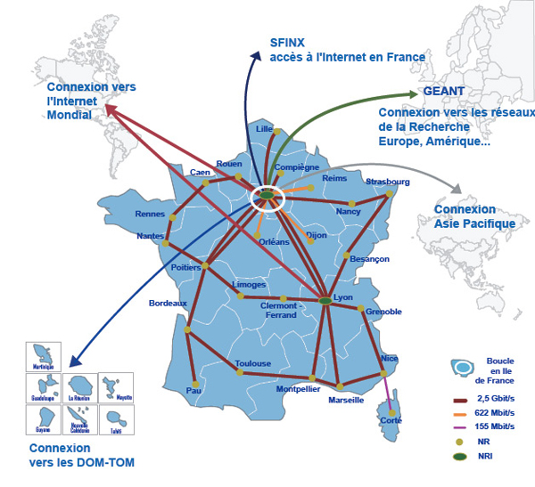

Types réseaux
Plan
• Introduction
• Classification part étendue
◇ Personal Area Network
◇ Local Area Network
◇ Metropolitan Area Network
◇ Wide Area Network
◇ Exemaple de réseau WAN : RENATER
Introduction
• Il y a plusieur manière de classifier les réseaux
◇ par étendue (PAN, LAN, MAN, WAN)
◇ par relation fonctionnelle entre les composants
▪ client/serveur
▪ p2p
◇ par topologie
Classification par étendue
• PAN : Personal Area Network
• LAN : Local Area Network
• MAN : Metropolitan Area Network
• WAN : Wide Area Network
Personal Area Network
• réseaux de très petite dimension
◇ généralement sur 10m ou moins
◇ pour une seule personne, ou un très petit nombre de personne
◇ et un très petit nombre d'éléments
▪ ex : laptop + un smartphone + un apperil photo connecté
• le plus souvent via des technologies sans-fil (Wireless PAN)
◇ IrDA
◇ Wireless USB
◇ ZigBee
◇ etc ...
• peut être réalisé à proximité directe du cops humain (Body Area Network).
Local Area Network
• réseau de petit dimension
◇ à l'échelle d'un bâtiment ou d'une entreprise
◇ sur une distance comprise environs entre 10m et 1km
◇ généralement quelques centaines d'utilisateur
• de 10Mb/s (Ethernet) à 1Gb/s (Gigabit Ethernet), voir 10Gb/s
Metropolitan Area Network
• à l'echelle d'un campus ou d'une ville
◇ privé ou public
◇ entre 5 et 50 kms
• généralement par fibre optique
◇ maus aussi
▪ par des médias identiques aux LAN
▪ la paire téléphonique (ex : RNIS)
▪ WiFi étendu
▪ Wimax
▪ etc...
Wide Area Network
• très grande zone géographique
◇ pays, continent, voir palnète
• Le plus grand et connu étant bien sûr internet
• assure l'inteconnexion entre LANs et MANs
• type de connexions hétérogène
◇ en fonction du prix et de la distance
◇ jusqu'a 2Tb/s sur fibres optiques
• diverses totpologies
Exemple de réseau WAN : RENATER

Ce qu'on a couvert
• Les différents types de réseaux.
◇ en fonction de leur étendue
▪ PAN
▪ LAN
▪ MAN
▪ WAN